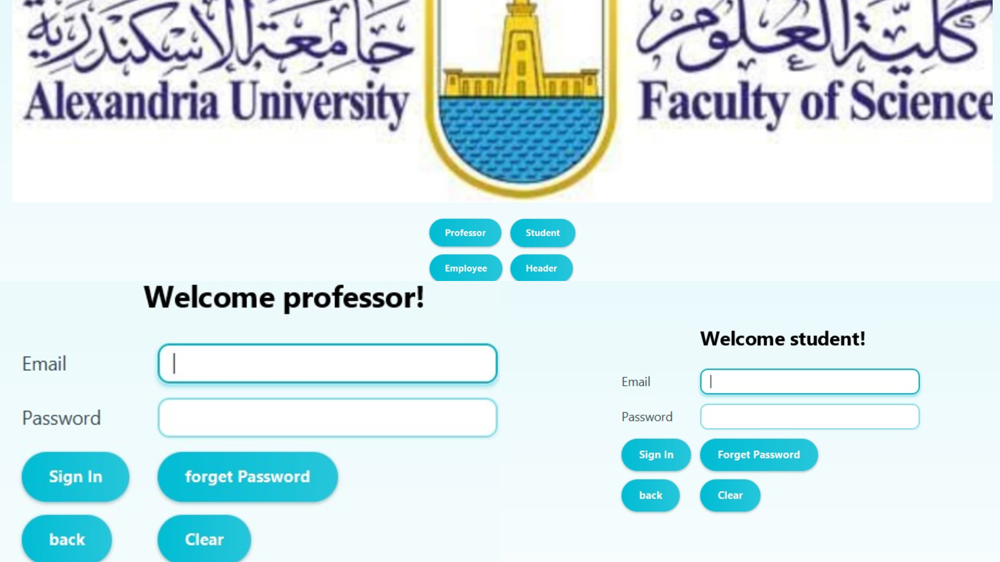

نبذة عني

أنا طالبة متخصصة ومتميزة في علوم الحاسب، ذات وعي تحليلي عالٍ، أركز على تطوير الواجهات الخلفية باستخدام تقنيات .NET/C#. أمتلك كفاءة قوية في ASP.NET Core، وأسعى لبناء واجهات برمجية RESTful قوية وتطبيق المنطق التجاري المعقد لحل مشكلات العالم الحقيقي.
لدي معرفة قوية بأنظمة قواعد البيانات مثل SQL Server و Oracle، إلى جانب الفهم العميق للمبادئ الأساسية لعلوم الحاسب مثل البرمجة الكائنية (OOP) وهياكل البيانات. هدفي المهني هو توظيف هذه الخبرات التقنية للانضمام كـ مطور واجهات خلفية مبتدئ (Junior .NET Backend Developer) لبناء تطبيقات خوادم عالية الأداء وقابلة للتوسع.
التعليم والدورات التقنية
علوم الحاسب
كلية العلوم، جامعة الإسكندرية
2024 - 2027المعدل التراكمي (CGPA): 3.7
المقررات الأساسية: هندسة البرمجيات، البرمجة الكائنية (OOP)، هياكل البيانات والخوارزميات، نظم التشغيل، نظرية الحوسبة.
الويب والجرافيكس: برمجة الويب، تفاعل الإنسان والحاسوب (UI/UX)، الرسوميات بالحاسب.
مقررات متقدمة: خوارزميات البحث في الذكاء الاصطناعي، العلوم الإحصائية.
مبادرة أشبال مصر الرقمية (DEPI)
تطوير البرمجيات - مطور ويب شامل .NET (وزارة الاتصالات)
يوليو 2025 - ديسمبر 2025اكتساب مهارات التطوير الشامل للويب (Full-Stack) من خلال بيئة .NET، مع التركيز على بناء تطبيقات مبنية على البيانات وقابلة للتوسع.
إتقان C# لبناء منطق الأعمال وتطوير مسارات RESTful API. اكتساب مهارات في HTML5, JavaScript, CSS3. خبرة في استخدام إطارات العمل .NET Core Web API و MVC.
شمل التدريب أيضًا التخطيط المهني للعمل، واللغة الإنجليزية للأعمال، والجاهزية للعمل الحر، مع التأكيد على مهارات التواصل الفعال والذكاء العاطفي.
الشهادات والجوائز


المهارات التقنية
الواجهة الخلفية (Backend) و واجهات الـ APIs
قواعد البيانات والأدوات
أساسيات علوم الحاسب
لغات برمجية أخرى
المهارات الشخصية (Soft Skills)
اللغات والهوايات
ما أُقدّمه من خدمات
أتخصص في بناء تطبيقات الويب الشاملة مع تركيز شديد ومُطوّل على بنية الواجهة الخلفية (Backend). بدءاً من تصميم المعماريات البرمجية القابلة للتطوير وبناء واجهات برمجية آمنة، وصولاً إلى إدارة قواعد البيانات العلائقية المعقدة، أضمن لك حلولاً قوية، مرنة ومستدامة للتطبيق.
تطوير ويب متكامل (Full-Stack)
بناء تطبيقات ويب شاملة للمستخدم من البداية للنهاية مع واجهات تفاعلية وأنظمة خلفية متينة تعتمد على تقنيات وأطر عمل حديثة.
معمارية الواجهة الخلفية و APIs
أقوم بتصميم وتطوير أنظمة مصادقة وحماية قوية، ووحدات أعمال أساسية مُنظمة، و مسارات واجهات برمجة تطبيقات (API) قوية وقابلة للتوسع باستخدام ASP.NET Core و Java و PHP.
تصميم وتطوير قواعد البيانات
تصميم مخططات قواعد البيانات العلائقية المعقدة باستخدام تقنية Entity Framework Core بنهج (Database-First) وإدارة الهياكل في SQL Server و Oracle و MySQL.
أبرز المشاريع

AbhaTop – Tourism Platform API
قيد التطويرالتقنيات المستخدمة: ASP.NET Core Web API, .NET 9, EF Core, SQL Server, JWT Authentication
- تطوير واجهات RESTful API قابلة للتوسع لمنصة سياحية.
- تنفيذ مصادقة JWT والتفويض القائم على الأدوار.
- بناء وحدات إدارة الحجوزات والتوافر.
- تصميم معمارية طبقية باستخدام Entity Framework Core.
- إضافة الوجهات والمهرجانات والنزل التراثية وميزات التسوق.

LEORE – تطبيق ويب متجر الكتروني للمنتجات النسائية
التقنيات المستخدمة: ASP.NET Core MVC, Entity Framework Core, SQL Server, ASP.NET Identity
- تصميم وتطوير متجر الكتروني ويب متكامل الخدمات (Full-Stack) مخصص لبيع المنتجات النسائية (المكياج، العطور، الإكسسوارات وغيرها).
- تنفيذ وتطبيق نظام مصادقة وحماية أمني قوي لعمليات التسجيل والدخول عبر مكتبة قوة ASP.NET Core Identity.
- بناء وحدات أعمال المتجر المعقدة مثل نظام عرض المنتجات، فلترة التصنيفات المختلفة، سلة المشتريات الشرائية، المفضلة، ومعالجة مراحل سير الطلبات.
- إدارة العمليات وتصميم قاعدة البيانات العلائقية بأسلوب (Database-First) باستخدام برنامج SSMS الشامل.
- تطبيق معمارية الـ MVC الدقيقة لضمان فك الارتباطيات وفصل الوظائف البرمجية (Separation of Concerns) لضمان نظافة الكود وقابليته للتطوير والصيانة بالوقت.

نظام إدارة الموارد البشرية المتكامل (HR)
التقنيات المستخدمة: ASP.NET Core, Web API, C#
- هندسة وتنفيذ طبقات المصادقة والصلاحيات (Authentication & Authorization) وتأمينها التام بـمكتبة حماية من ASP.NET.
- تطوير مسارات نهايات برمجية (End Points) لـنظام RESTful API سلس لتنظيم بيئة عمل الموظفين والأقسام داخل المنظمة.
- تطبيق المبادئ القوية لـالبرمجة الكائنية OOP بشكل كامل للتركيز على واجهة خلفية نموذجية موحدة وقابلة للصيانة الدائمة.
- دمج نظام الحضور المتقدم المعتمد على خوارزمية تحديد وتتبع القرب المعين للموظفين بدقة.

نظام إلكتروني شامل لتسجيل المقررات الجامعية
التقنيات المستخدمة: Java, JavaFX, CSS, Oracle
- تطوير منطق العمل القوي للنظام البرمجي كاملاً وربطه بقاعدة بيانات لـ Oracle الكبيرة بكفاءة مع تصميم مخططها الهندسي الموثوق وتأدية الحفظ المنتظم.
- بناء وهندسة نظام متكامل من الألف للياء لإضافة وحجز وسحب المقررات التعليمية، التحكم الشامل في إدراة المستخدمين المتعددين (مدير النظام، دكتور، طالب) وصيانة البيانات الجارية وحذفها في الداتا.
نظام إدارة وتسجيل الكلية عبر الويب
التقنيات المستخدمة: PHP, MySQL, HTML, CSS, JavaScript
- التركيز بنشاط كبير ومكثف على تطوير وتجميع كل مايتعلق بـالجانب الأمامي للموقع بشمولية، مما يضمن تجربة بصرية نقية تمامًا وتصميم متجاوب واحترافي للمستخدم على جميع أنواع الشاشات والأجهزة.
- المساهمة بقوة كبيرة في بناء قاعدة بيانات وخوارزميات ومسائل ومكونات الخلفية البرمجية المعقدة (Backend) وربط النظام برمجياً بمكتبات الـ MySQL القوية.
لنتعاون ونعمل معاً
هل أنت مستعد لنقل مشروعك إلى مستوى أعلى واحترافي أو مجرد تريد فقط إلقاء التحية؟ بريد الاستلام الخاص بي دائماً مفتوح.
hamsasaid616@gmail.com تواصل معي عبر WhatsApp